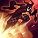
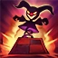
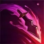

Skill Introduce:
Backstab
Shaco teleports nearby and becomes Invisible for 1.5/2.25/3/3.75/4.5 seconds. Shaco remains Invisible even if he uses Jack in the Box or Hallucinate. His next basic attack during Invisibility deals 10/20/30/40/50 (+40% bonus Attack Damage) (+30% Ability Power) bonus physical damage and reduces Deceive's cooldown by 0 seconds.Stealth - Invisible: Shaco can only be revealed by nearby enemy Turrets or True Sight.
Deceive
Shaco creates a Jack in the Box that hides from view after 2 seconds. It pops out when an enemy comes near or when uncovered by a ward or trinket, making nearby enemies flee very slowly for 0.5/0.75/1/1.25/1.5 seconds.Its attacks deal 35/50/65/80/95 (+20% Ability Power) magic damage. It lasts for 60 (+5% Ability Power) seconds while hidden or 5 seconds while firing.
Jack In The Box
Passive: While Two-Shiv Poison is ready to cast, Shaco's basic attacks reduce the target's movement speed by 20/22.5/25/27.5/30% for 2 seconds. Active: Shaco throws a shiv that deals 55/80/105/130/155 (+100% bonus Attack Damage) (+75% Ability Power) physical damage and reduces the target's movement speed by 20/22.5/25/27.5/30% for 3 seconds. The shiv's damage is increased by up to 50% based on the target's missing health.
Two-Shiv Poison
Shaco vanishes briefly and reappears with a clone. The clone lasts up to 18 seconds and detonates when it dies, dealing 200/300/400 (+100% Ability Power) magic damage to nearby enemies and spawning three mini Jack in the Boxes. Mini boxes deal 25/50/75 (+15% Ability Power) damage, make enemies flee for 0.75/1/1.25 second(s), and trigger together. Clone deals 75% of Shaco's damage and receives 50% increased damage.The clone can be controlled by holding the alt key and using the right mouse button or by reactivating this ability.